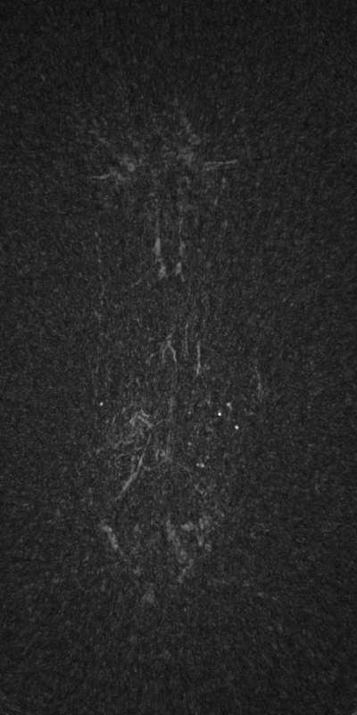
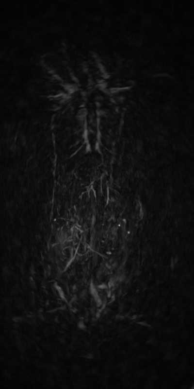
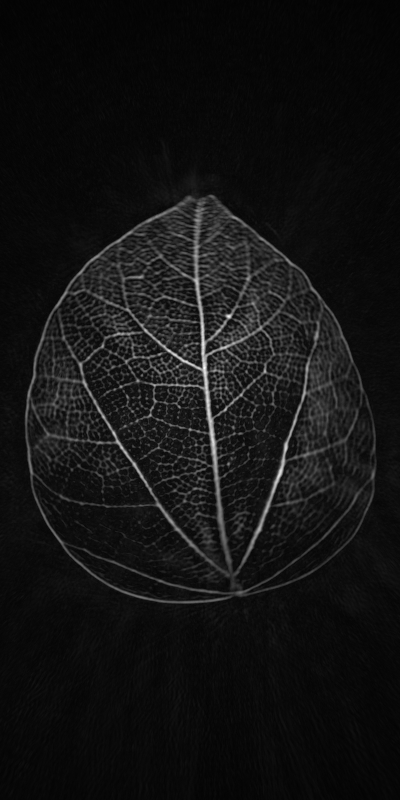
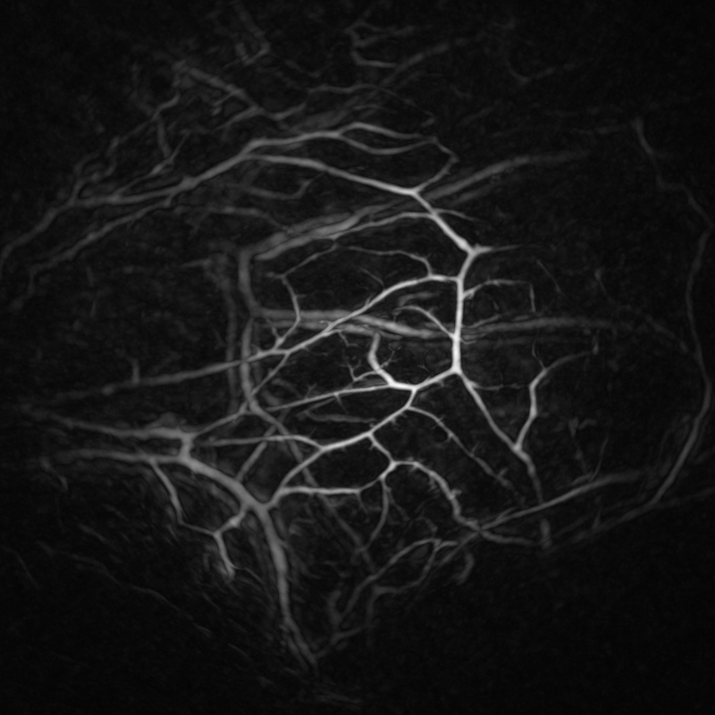

理解数据
从样本预览到采集信息，了解数据结构、空间尺度与适用场景。
数据与背景01 / 数据集
围绕三维光声成像，组织样本、方法与研究资料，
让数据的理解、使用和引用拥有清晰的路径。
从样本预览到采集信息，了解数据结构、空间尺度与适用场景。
数据与背景
增强前
增强后连接配套图像增强算法，呈现方法思路、使用流程与评估依据。
方法与评估

从数据获取到文档与引用，为复现、比较和后续工作提供入口。
获取与复现02 / 探索数据
按类型、划分或关键词探索。
打开样本，查看完整原图与来源记录。
试试其他关键词，或清除当前筛选条件。
请检查样本文件是否存在。
03 / 图像增强
拖动中间分界线查看增强前后；也可使用方向键、Home 和 End。
 GT · 参考图像
GT · 参考图像
项目提供图像 · 统一旋转 90° · 完整视野 · 未作额外亮度调整
围绕三维光声图像增强，集中展示方法思路、输入输出约定与可复现流程。具体方法、实验结果和使用资料将在此补充。
方法资料准备中
数据结构 · 空间尺度 · 输入约定
方法概览 · 运行环境 · 推理流程
视觉对比 · 评估协议 · 适用范围
展示结构示意，具体流程以实际方法为准。
05 / 论文与引用
这里将收录数据集与配套方法的正式论文、作者信息及引用方式。
正式引用信息将在论文资料确认后提供。
暂未提供可用引用
06 / 团队与贡献
认识项目背后的研究者。
让反馈与贡献拥有明确的入口。
团队成员、所属机构与分工将在这里介绍。
欢迎围绕数据使用、方法复现与文档改进提供反馈。项目联系与贡献方式将在确认后开放。